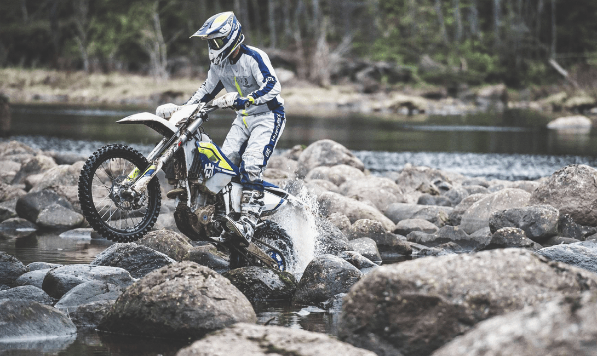
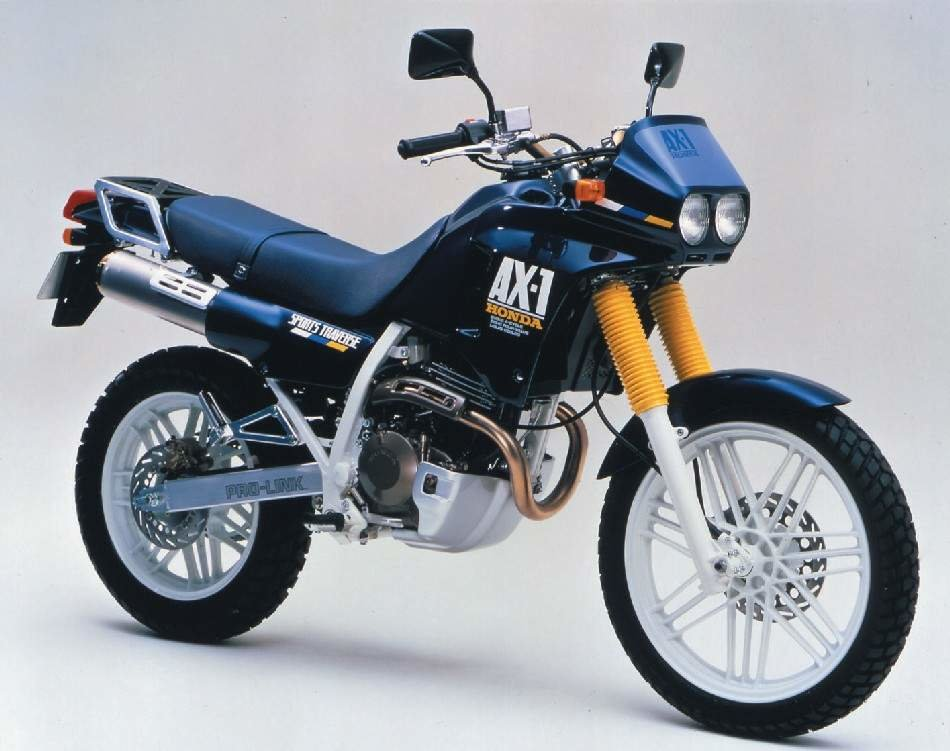
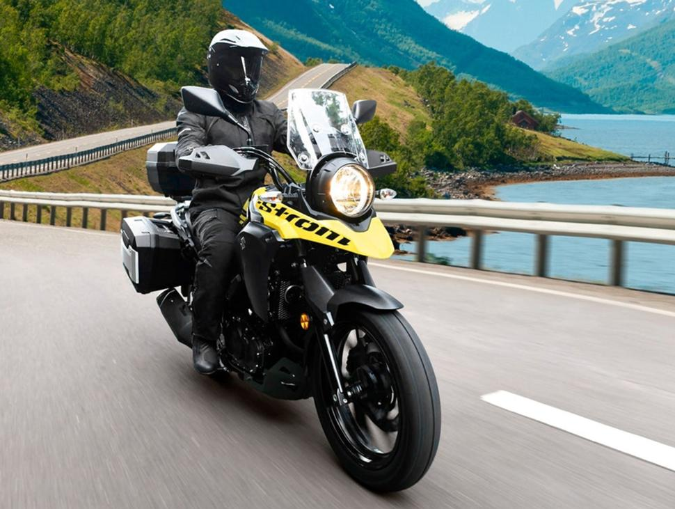
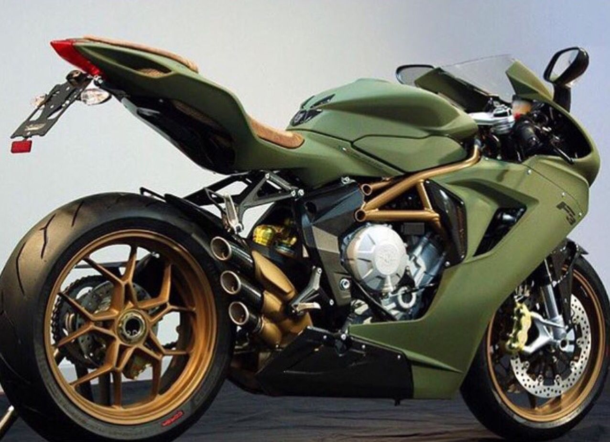
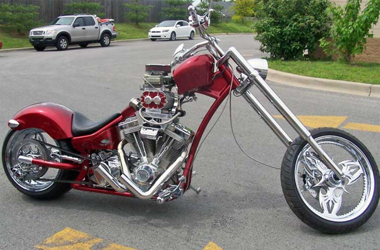
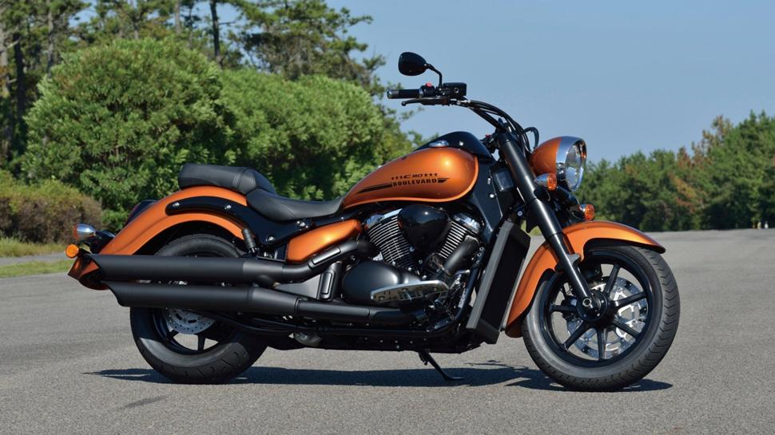
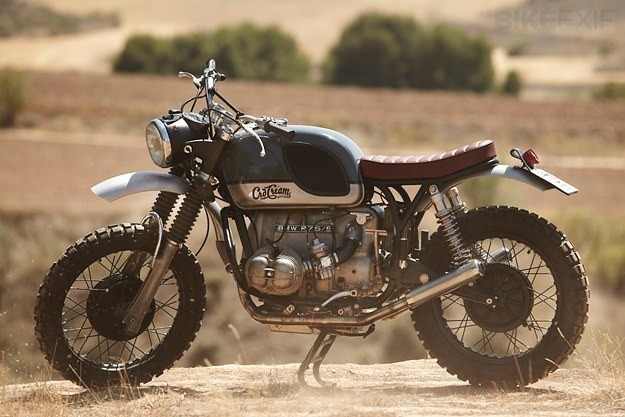
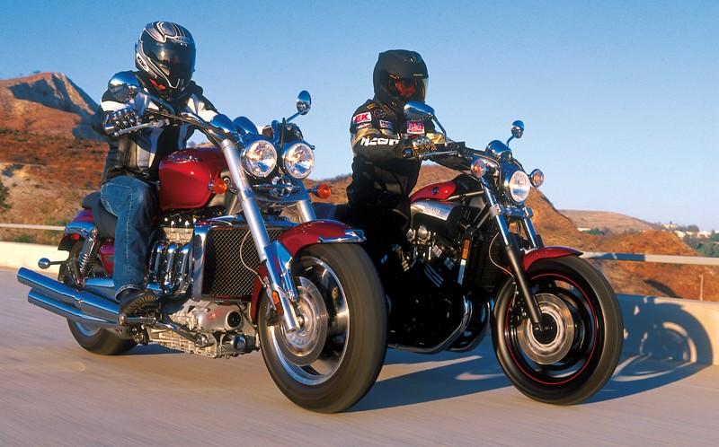
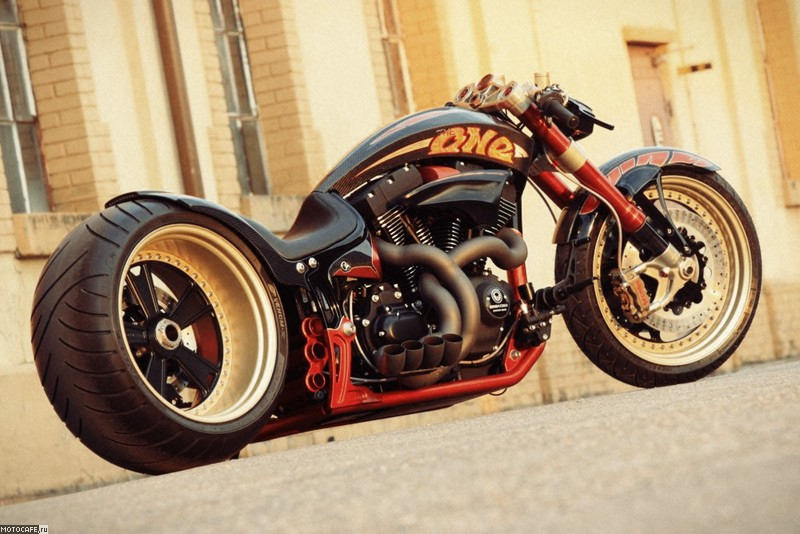

Кроссовые мотоциклы лишены всех дополнительных защит и электростартера в угоду снижения массы. Более верховой мотор ввиду того, что гонка в этом классе проходит на специально подготовленной грунтовой трассе. Скорости и высокие прыжки в гонке — нормальная практика, отсюда и более жесткая конфигурация подвески.
Эндуро
Мотоциклы этого класса в свою очередь делятся на несколько подкатегорий по назначению и, как следствие, конструктивным особенностям:
- Хард эндуро
- Софт эндуро
- Туристические эндуро
Хард эндуро.
Злой внедорожный мотоцикл, предназначенный для участия в продолжительных гонках по пересеченной местности, со сложными спецучастками, грязевыми ваннами и каменистыми подъемами.
Ввиду его внедорожных качеств для поездок по асфальту не годится от слова “вообще”.
Зубастые шины вытрутся о ДОПы за пару километров. А от вибраций позвоночник ссыпется в мотоштаны.

Байки часто путают (и почему-то сравнивают) с кроссовыми мотоциклами. На самом деле, внешне оба этих класса весьма схожи. И отличает их наличие светотехники. А вот конструктивные отличия куда значительнее.
Хард Эндуро обладает более мягкой и длинноходной подвеской, немного сниженной полкой крутящего момента, наличием электростартера, всевозможных защит: картера двигателя, тормозной системы и так далее.
Софт эндуро.
Мотоциклы двойного назначения, хорошо подходят как для асфальтированных дорог, так и для поездок где-то рядом с ними.
Идеален для мотопатрулирования в шортах и сланцах вокруг дачи, если вы понимаете, о чем я…

К отличительным особенностям класса можно отнести:
- шумный одноцилиндровый двигатель;
- относительно небольшой вес;
- повышенную проходимость ;
- небольшие межсервисные интервалы;
- повышенную прочность и др.
Туристические эндуро.
Назначение этих мотоциклов кроется в названии.
Это тяжелые и мощные мотоциклы для дальних поездок, по любому типу дорог или их отсутствию.
Яркие представители — Honda Africa Twin, Honda Varadero, Suzuki Vstrom, KTM 990 adventure, BMW GS.

Отличительными чертами туристических эндуро, в сравнении с дорожными туристами, являются вдвое большие ходы подвесок, совершенно прямая и комфортная посадка.
В этом классе комфорту поездки уделяется большое внимание. Такие мотоциклы комплектуются хорошей ветрозащитой, часто — подогревами ручек, системами крепления кофров, 12-вольтовыми выходами для подключения навигации, зарядки смартфонов и так далее.
Двигатели, в отличие от товарищей по классу, хорошо сбалансированы и практически не имеют вибраций.
Оснащены хорошей жидкостной системой охлаждения, системами ABS и трэкшн-контроля.
Это мощные и выносливые мотоциклы, которые замечательно чувствуют себя как в городском трафике, так и в кругосветном путешествии.
К отличительным особенностям мотоцикла можно отнести:
- ресурсный сбалансированный двигатель;
- омфорт поездки как для водителя, так и для пассажира;
- повышенную проходимость ;
- отличную управляемость;
- систему крепления кофров;
- отличную ветрозащиту и др.
Все семейство Эндуро так или иначе связано с желанием ехать где-то помимо дорог. Поэтому если вы по пути на работу с тоской смотрите куда-то в овраг, вам стоит обратить пристальное внимание на эти мотоциклы.
Спорт
Спортбайк создан с одной лишь целью – как можно быстрее проехать круг гоночного трека.
Аэродинамика реактивного снаряда и двигатель под стать.
Максимально агрессивная посадка и сумасшедшая динамика делает эти мотоциклы генераторами адреналина и прикольных видосов.

Небольшой вес, мощный оборотистый двигатель, легкосплавная рама диагональной конструкции, монокок, и др. Магниевые колёсные диски, новейшие системы впрыска топлива, революционные композитные материалы, тормозные системы и практически все последние разработки в мотоиндустрии — тесно связаны с этим классом. А все благодаря таким мировым гоночным событиям как:
- «Tourist Trophy»
Это старейшее и самое опасное в мире гоночное событие. С 1907 года и по сегодняшний день с запредельной скоростью проходит на острове Мэн.
- «MotoGP»
Она же гонка прототипов, объемом до 990 кубических сантиметров, в которой команды крупнейших производителей мотоциклов противостоят друг другу и демонстрируют превосходства марки, вплотную подобравшись к пределу возможностей человека и техники.
- «WSBK»
Это мировой супербайк, шоссейно-кольцевая гонка на заводских моделях спортбайков с незначительными доработками, и регламентом по объему четырехтактного двигателя в 400-600 кубических сантиметров.
Хоть класс спортивных мотоциклов не подразумевает комфорт и городскую езду, это еще никого не останавливало от использования их как основного байка на каждый день.
Крупнейшие производители:
- Suzuki;
- Honda;
- Yamaha;
- Ducati;
- Kawasaki;
- Aprilia;
Не обошлось и без появления микроклассов, таких как:
- Спорт туристы — высокопроизводительные мотоциклы большого объема с превосходной ветрозащитой, динамикой и уровнем комфорта. Серьезно отличаются по посадке. Она здесь намного более прямая: как по положению корпуса пилота, так и по положению ног. Яркими представителями класса являются Yamaha FJR 1300, Honda VFR 800, Honda VFR 1200.
- Гиперспорт. Микрокласс, который производители позиционируют как «мотоцикл для скоростного туризма». На деле же это чудовища от литра объемом для рывков через гиперпространство. Самыми узнаваемыми представителями которых являются Suzuki Hayabusa GSX1300R и Kawasaki ZZR (ZXR) 1400.
Высокопроизводительный мотоцикл, которым по умолчанию является любой спортбайк, требует от пилота максимальной концентрации, понимания ситуации на дороге и возможностей мотоцикла. А еще — до автоматизма вкатанного навыка торможения. Последнее является обязательным условием для приобретения.
Чопперы
Производное от круизеров, с которыми их успешно путают чуть реже, чем постоянно.
Оно и не удивительно, ведь основные отличия кроются только в стилистическом оформлении байка.
Основной особенностью является удлиненная вилка с увеличенным наклоном или вилка спрингер, маленький бак классической каплевидной формы, задняя «сухая», или стилизованная под нее, подвеска.
Мотоцикл не создан для быстрой езды, он скорее для пожирания километров на трассе или стильного дефиле по городским улицам.

Появляется закономерный вопрос: а что же такое круизер.
Круизер
По сути представляет собой стильную версию архаичной конструкции классических американских мотоциклов времен 30-50х годов.
Отшлифованную до блеска во всех смыслах: как внешне, так и в технологическом плане.
Философия байков этого вида — полное, или практически полное, отсутствие пластиковых элементов.
Обилие хрома или брутальных элементов декора под цвет мотоцикла.

Конструктивно: низкооборотистый V-twin с воздушным охлаждением в стальной раме, классическая американская посадка райдера.
Современные представители данного класса могут демонстрировать хорошую динамику. Но в определенном диапазоне скоростей.
Ведь нужно понимать, что круизер — мотоцикл не про скорость.
И пусть на них практически отсутствует ветрозащита, но, наматывая сотни миль на колеса клокочущего низким басом монстра, остановиться бывает крайне сложно…
Боббер
Своим появлением обязан американским солдатам, вернувшимся после второй мировой войны и впечатленными легкими европейскими мотоциклами.

В те времена все аксессуары на мотоциклах американского производства были изготовлены из стали и, демонтируя все это хозяйство, удавалось сэкономить до половины веса мотоцикла.
А поработав с силовым агрегатом, получался весьма серьезный аппарат по тем меркам.
Еще стоит отметить, что асфальт не то чтобы был повсеместно…
Отсюда и внешний вид этого класса, дошедший до наших дней.
Скремблер
Еще одно ответвление от классики в сторону проходимости, получившее развитие от кастомайзинга до выхода на конвейер мировых производителей.

Мотоциклы двойного назначения, отличительными чертами которых являются злые покрышки, приподнятый выхлоп и забор воздуха.
Популярные модели в свое время: Ducati Scrambler 450, Norton P11 750, Harley-Davidson Aermacchi SX-350, BMW R80 и др.
Драгстеры (power-cruiser) — мускул-кары в мире мотоциклов.
Еще одно ответвление от классики в сторону проходимости, получившее развитие от кастомайзинга до выхода на конвейер мировых производителей.Это максимально прокачанный класс круизеров. Чаще всего с V2 или V4, жидкостной системой охлаждения, запредельной мощностью и просто паровозной тягой. Без грамма стеснения конкурируют в скорости с многими спортбайками. Но вот только не в управляемости.

За что особо отличившийся представитель класса, Yamaha VMAX, получил прозвище «летающая кувалда».
330-ти килограммовый снаряд с аэродинамикой кирпича, разменивающий первую сотню за 2.6 секунды!
Самыми яркими представителями класса являются: Yamaha VMAX 1700, Harley-Davidson V-ROD, Ducati Diavel, Triumph Rocket III, Suzuki M109R.
Шоу-стоппер.
Своего рода искусство глубокого тюнинга и стайлинга. Или вообще — создание произведения с нуля, в основе которого — исключительно внешность.

Это выставочные экземпляры, зачастую не имеющие возможности двигаться самостоятельно.
Основным назначением данных байков является посещение выставок или украшение богатых интерьеров.